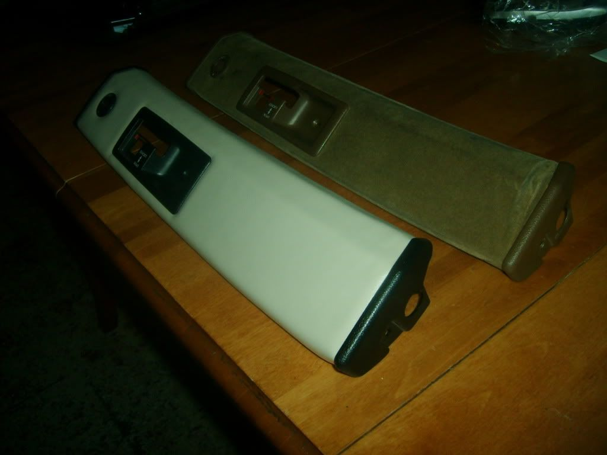
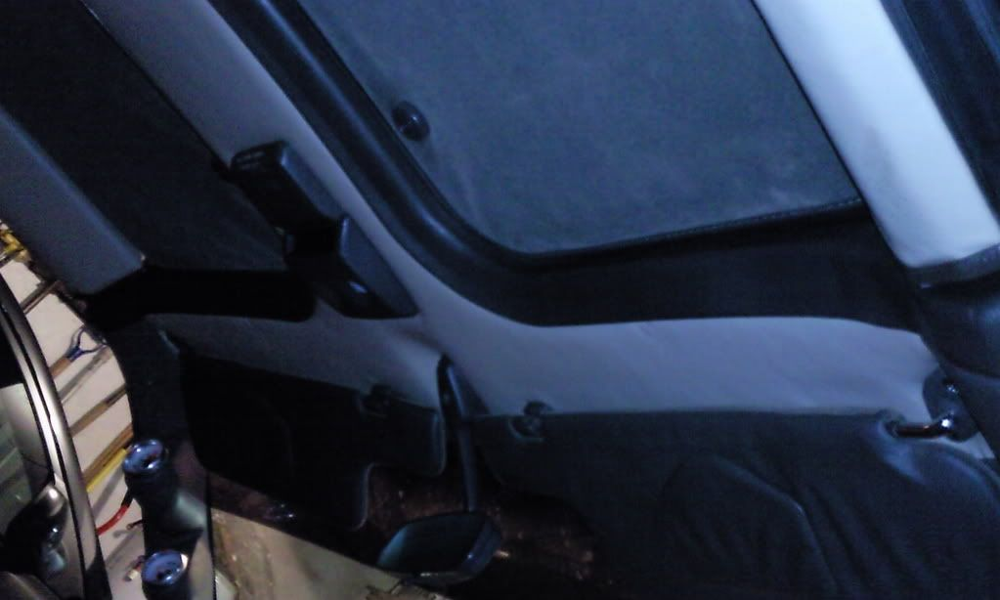
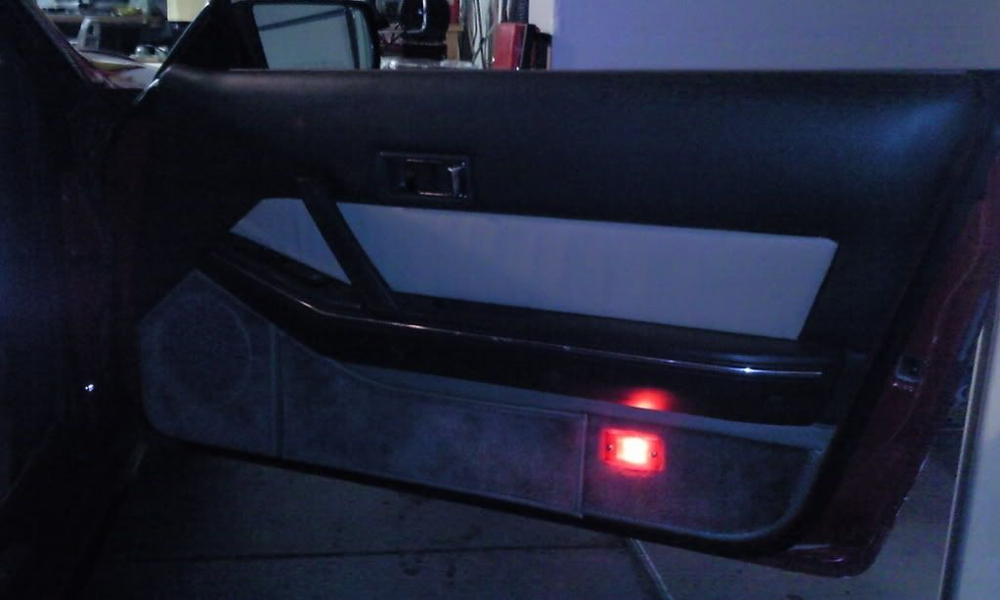

-
Ok, so I've done this a few times and decided since I took pics of most the process I'll post a quick how to since this seems to be a common problem. The trim on our T-tops often get old, brittle, or faded which leads to either the fabric coming undone on just looking crappy. This fabric covered piece is referred to as t-top garnish by Nissan. This is what they seem to look like most the time.
So here's the way to replace them.
Remove the button to release the lock on the handle.
Remove 2 screws from either side of the t-top.
Remove the 1 screw on the plastic behind the handle.
Pull the plastic sides gently over the locking bar area.
Lift and twist the garnish to clear the open handle.
Now your garnish should be separate from your t-top.
The plastic sides each have 3 pins that come through the back of the garnish and are flattened into rivets, the plastic by the handle has 6 of these same things. Carefully pop the rivets off, while retaining the back is not important, keeping the rest of the pin intact is. The plastic around the lock is held in place with a clip on the rear, simply slide it off and the plastic part slides out freely. Once they are removed you can simply strip the fabric away, from the factory there are shallow staples holding the fabric in place on the back side. Now you should be down to a cardboard like piece with metal on the ends. Clean it up, get rid of old junk on it, even a light sanding wouldn't hurt once the big stuff is off. Now for the pictures.
Spray headliner adhesive on the garnish. Mine states spray in alternate directions each coat, apply 3 coats, wait 5 min between coats.
After all coats are applied and adhesive has become tacky apply headliner material. Be sure to press out any bubbles, apply even pressure, and once you feel it has all been laid on properly, let sit for 30 min.
After 30 min cut the sides to the edge of piece, leave 1/2"-1" on top and bottom to lay over. Cut the handle out, and the lock, no need to leave room for overlap here. Also use a punch, or even a small enough screw driver to punch holes where the 6 pins belong around the handle. If you like this than you can spray the back side on the edges, follow the same steps as the front, and fold over the overlap for the top and bottom. At this point you can place plastic around the lock and the plastic around the handle back in place. It would look similar to this.
If you're feeling froggy you can use a different texture, like velvet, or I used vinyl. The problem with these are they are too thin and will leave gaps between your fabric and plastic trim. Like this, notice the end caps.
So if you feel up to the challenge, follow the past directions, then repeat again on top of the headliner material so you can lay velvet, vinyl, whatever you choose, on top of it. That way you can have a thin material that looks good, but have a cushion behind it and it will fill up the plastic trim. The only other things to remember in that case is that you want to leave extra overlap on the top and bottom for the top material to bond to the garnish piece as well. Also with something as think as vinyl, you need to make an X with a razor where the pins should go, once the pins start though you may need to use the razor to cut area's it will catch on from the back side. If you do not cut close enough to the edge on the sides, when you place the end caps on it may push the material inwards, creating a bubble. It should start looking like this.
So once it's folded over and has dried, place the end caps on. You should be able to push them down on the fabric enough to make the 3 pins line up with the holes and pop them back in. If done correctly there is even enough pin showing that you could use a hot flat item to create a form of rivet, though probably not required. You can now place it back onto the t-top in the reverse of how you removed it, and finally
So a few before next to after shots to compare.

Hope this can help someone out. -
Looks very similar to how mine came out a couple years ago, nice job. I did my headliner and door inserts to match. Wish the vinyl was a little darker shade.

'85 300zx turbo: exhaust, intercooler, coilovers, etc…SOLD, will be missed
'86 300zx turbo: starting over
'97 Dodge 2500: 12v Cummins …selling and will be missed
'94 Jeep Cherokee: D60 Front 14b rear, both locked and 5.38 gears, 37" mtr's
2015 Ram 2500 megacab laramie cummins black appearance package -
I decided to stick with just the headliner material for the headliner, just for weight reasons, I'm planning on doing my door skins and more as I get to them. I decided recently to do the tan with black trim though, similar to what you did, I think it sets it off quite a bit more. -
That looks great! I've bookmarked this for when I tackle mine.
|dg1987 GL Slicktop | SS 729 Under Renovation -
Might I inquire has to where you guys got the materials to do the job? They both look amazing!!!
Great work!"zetto sun-ichi" group" -
The headliner material is probably going to have to come from an automotive interior specialty shop or ordered off the internet. The vinyl can be had at any hobby/crafts/fabric store, pretty much any place that sells fabric. You might even be able to get some thin foam sheeting to take the place of the headliner material for bulk. The spray adhesive you can get at pretty much any autozone type place, all the Walmarts here have it in the automotive department as well.
"Beer is proof that god wants us to be happy" - Benjamin Franklin -
I bought both the headliner and vinyl at a automotive/marine fabric specialty store. I've stop by some places that do reconditioning of cars that have offered to order the headliner material for me. The Vinyl can be had even at wall mart, I just went with the automotive/marine grade due to it's more durable qualities. I picked up headliner adhesive at NAPA. Not a very difficult job in reality, but I know a lot of guys are affraid to play around with the plastic trim on the garnish because of the plastic pins needing to be "broken". -
looks excellent.
good work.
doing this soon!
PO cut the headliner at the back to stop it from flippity flappin' -
I've seen that before, great fix isn't it? Next time I head to the shop I'll buy black headliner to replace my 89 too, probably will do the t-tops just because I love the way the vinyl looks. If I redo the door skins on my 89 I'll do a write up on that too. -
Results look great guys. Let me add an important detail here…
Be sure the can says "Heat Resistant" on the spray adhesive. MOST adhesives soften up and can easliy pull loose during the heat of a closed up car in the summer.Everything is Meaningless. -
yeah, the can I got was specifically for headliners not a generic adhesive, so it was designed to hold up to the heat, but if using a general adhesive def. make sure it's high temp. -
Sorry to hitch on to an old thread but, in step 1 "Remove the button to release the lock on the handle" how do you remove it? Mine broke off the other day on my driver's side T-top. I have a spare T-top but don't want to pull and pry on that lock button. I found a replacement here https://vintagezparts.com/product/t-…release-lever/ but want to save my $30 if I can. BTW I have an 89 so I don't have the extra lock with key on my t-tops.

Copyright © 2006–. All rights reserved. Privacy Policy